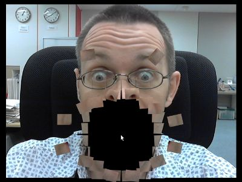

Playing with HTML5 video & getUserMedia support
You may have seen the impressive HTML5 experiment created by Sean Christmann involving a video that explodes at the click of a mouse. If not, we'd recommend that you have a look:
At the time, the boundaries of non-plugin video within a desktop browser were being explored and it caused a stir as an example of how video within the browser can be manipulated. The way he achieved the result was clever as he used two instances of the HTML5 canvas: a hidden one for painting and another visible one for manipulating. Sean must have been through a lot of trial and error and the lessons he learned are an interesting read.
Now that we have released a desktop build with getUserMedia support to match our Opera Mobile with camera support for Android, we thought we'd have a go at converting his demo (with his permission) to work with either a webcam or a mobile device's built-in camera. The result can be seen here:
HTML5 exploding camera demo (bit.ly/democam)
Let's go through what we did to make the demo work with a camera both on desktop browsers as well as mobile devices.
Use getUserMedia for the video source
The original HTML code has a <video> element that uses two <source> elements to enable two video formats to be available to browsers. For camera use, we removed these <source> elements and replaced them with JavaScript code to use the camera as the video source. Incidentally, although we don't initially have a video source, we can still use the autoplay attribute so that the camera stream will be displayed without the user having to click anything.
<!-- HTML code -->
<video id="sourcevid" autoplay>Put your fallback message here.</video>/* JavaScript code */
window.addEventListener('DOMContentLoaded', function() {
// Assign the <video> element to a variable
var video = document.getElementById('sourcevid');
// Replace the source of the video element with the stream from the camera
if (navigator.getUserMedia) {
navigator.getUserMedia('video', successCallback, errorCallback);
// Below is the latest syntax. Using the old syntax for the time being for backwards compatibility.
// navigator.getUserMedia({video: true}, successCallback, errorCallback);
function successCallback(stream) {
video.src = stream;
}
function errorCallback(error) {
console.error('An error occurred: [CODE ' + error.code + ']');
return;
}
} else {
console.log('Native web camera streaming (getUserMedia) is not supported in this browser.');
return;
}
}, false);That's it! In the demo code we added a more readable error message for users without camera support. Credit goes to Rich Tibbett for this code.
Note that we are checking for browser support of the getUserMedia method rather than checking which version of a particular browser the user is using. This is much more trouble-free and future-proof than parsing the user agent and trying to maintain a list of compatible browsers.
Add touch support
Although events such as onclick are understood by mobile browsers, using touch events is much more efficient and in this demo, we need as much efficiency as we can get. Firstly, we check to see if touch events are supported:
// Create a boolean variable: true if touch is supported.
var isTouch = 'createTouch' in document;
Next, we use this boolean to override the ontouchstart event in touch-enabled devices and onmousedown in other environments. This means we only need to write one listener to fire our main function.
var outputcanvas = document.getElementById('output');
var mouse_down = (isTouch ? 'ontouchstart' : 'onmousedown');
outputcanvas[mouse_down] = function(event) {
dropBomb(event, this);
};This is enough to get it to work, but in our demo we will also need the coordinates of the touch event. This is slightly different to getting mouse coordinates and this difference, if you're not aware, can cause a lot of head-scratching. Well, it did in my case! The cause is multi-touch support which means that each touch event has multiple coordinates, provided by the browser in a touches array. With an if statement such as the following, we can get the coordinates whatever browser we're dealing with:
// Get the user's touch/mouse coordinates to explode the canvas
function dropBomb(event, obj) {
event.preventDefault();
var posx = 0;
var posy = 0;
var e = event || window.event;
if (e.touches) {
posx = event.touches[0].pageX;
posy = event.touches[0].pageY;
} else if (e.pageX || e.pageY) {
posx = e.pageX;
posy = e.pageY;
} else if (e.clientX || e.clientY) {
posx = e.clientX + document.body.scrollLeft + document.documentElement.scrollLeft;
posy = e.clientY + document.body.scrollTop + document.documentElement.scrollTop;
}
var canvasX = posx-obj.offsetLeft;
var canvasY = posy-obj.offsetTop;
explode(canvasX, canvasY);
}Speed, more speed!
I was surprised at how fast desktop browsers handled the video manipulation but unlike Sean's original demo, we're also targetting mobile devices so we should strive for any performance improvement possible. Fortunately there are a couple of quick ways we can speed things up a bit. Firstly, we look for the most intensive part of the script and in this case, it's clearly the processFrame() function which is repeated every 33 milliseconds. Within this there is a for loop which loops through an array of tiles, calculating the length of the array with each iteration. Caching the array length at the start of the loop would be more efficient, like so:
// Standard for loop
for(var i = 0; i < tiles.length; i++){
// Execute code
}
// Faster for loop with array length cached
for(var i = 0, len = tiles.length; i < len; i++){
// Execute code
}Any calls to Math methods are also time-consuming so we should to try to optimise these as well. One way is to simply cache the Math object in a global variable but we found this usually only gives a small improvement. A better approach would be to replace certain methods with more efficient versions if possible. In our processFrame() we're using Math.abs() a few times and there happens to be a faster way to achieve the same result:
// Standard use of Math.abs
var a = Math.abs(x);
// Faster than Math.abs
function absolute(x) {
return (x < 0 ? -x : x);
}
var b = absolute(x);Finally, if we reference any object properties that are static, it's worth caching them in variables to get a further speed boost. For example, to adapt to various screen sizes we made the painting area (PAINTRECT) the same size as the browser window using window.innerWidth and window.innerHeight. This is unlikely to change during the demo (unless the user resizes the window) so we decided not to reference the x, y, width and height properties with each call of processFrame(). Instead, we can reference them once outside the recurring function and store them in a variable:
var PAINTX = 0;
var PAINTY = 0;
var PAINTWIDTH = window.innerWidth;
var PAINTHEIGHT = window.innerHeight;
function processFrame() {
// Some code
draw.clearRect(PAINTX, PAINTY,PAINTWIDTH,PAINTHEIGHT);
// Some more code
}For performance testing, jsPerf is an excellent resource, both for creating your own tests or running pre-made ones.
Conclusion
In converting Sean's demo to using a camera, it turns out it's very easy to simply replace the video's source with the camera's stream. This works well on desktop browsers with getUserMedia support but we went a bit further. The extra work we put in to our example is because in the 18 months since he wrote the original code, browser technology has progressed so that video within mobile web pages is now a reality. To provide the best experience possible for all users, it's worth making the extra effort to look after users on touch devices and to improve efficiency for lower-powered devices. I'm sure my code can be improved further so please let us know your suggestions and ideas in the comments.
Note: You can find another fantastic camera demo, written by Mike Taylor, at his Photobooth page. This makes great use of getUserMedia and <canvas>. Shwetank Dixit has also created a great getUserMedia demo inspired by Andy Warhol! There's also a Polaroid-style getUserMedia demo.
This article is licensed under a Creative Commons Attribution-Noncommercial-Share Alike 3.0 Unported license.
Comments
The forum archive of this article is still available on My Opera.
-

Here's my attempt at implementing getUserMedia http://html5photobooth.com.
-

Why is an abs function written in javascript faster than the built-in Math.abs? That makes no sense! At the very least the built-in Math.abs could itself be implemented in javascript.
-
Opera not supports audio context of getusermedia.
No new comments accepted.thethisorthat
Sunday, January 29, 2012
I Open Sourced the code if you're interested how it was put together. Look forward to see improvements and feedback. https://github.com/davexoxide/HTML5-Photobooth
Sjoerd Visscher
Thursday, June 14, 2012
virusgratis2
Wednesday, September 12, 2012